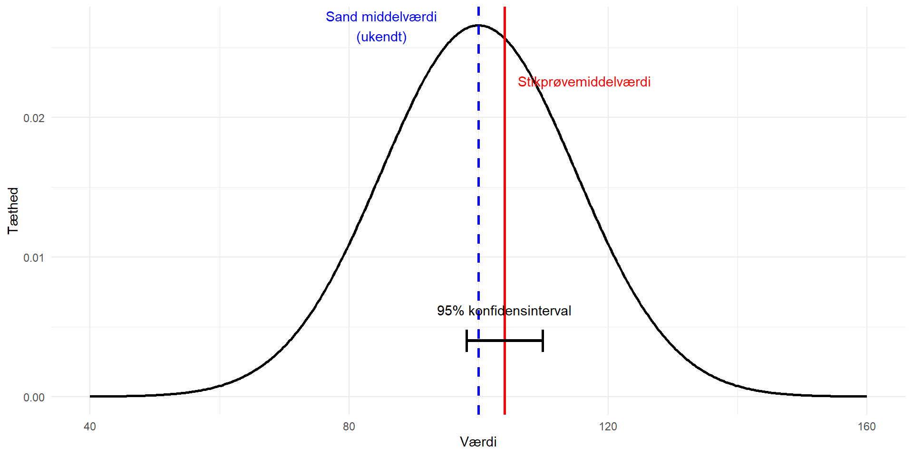
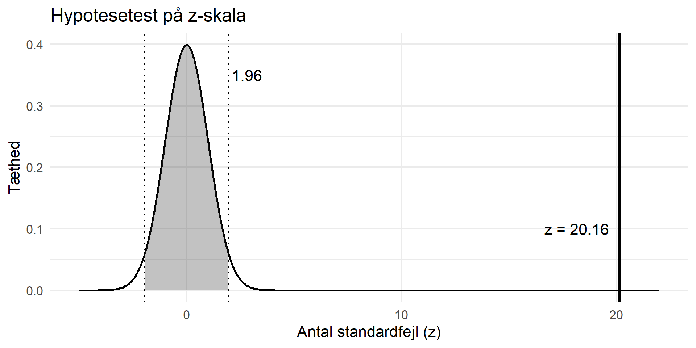
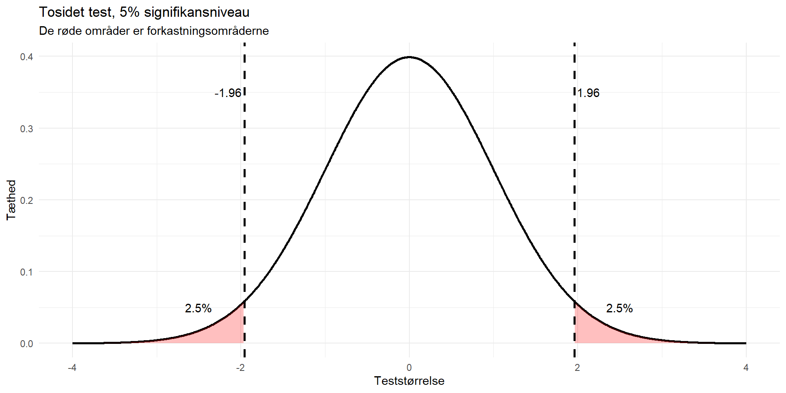
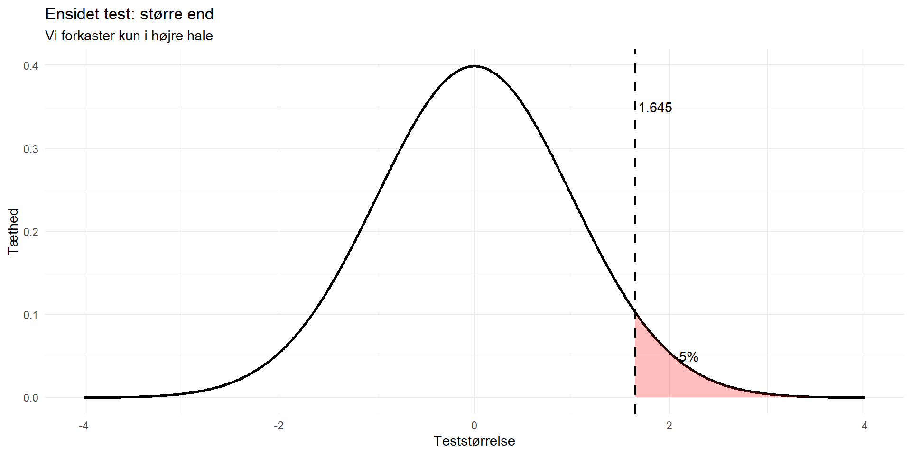
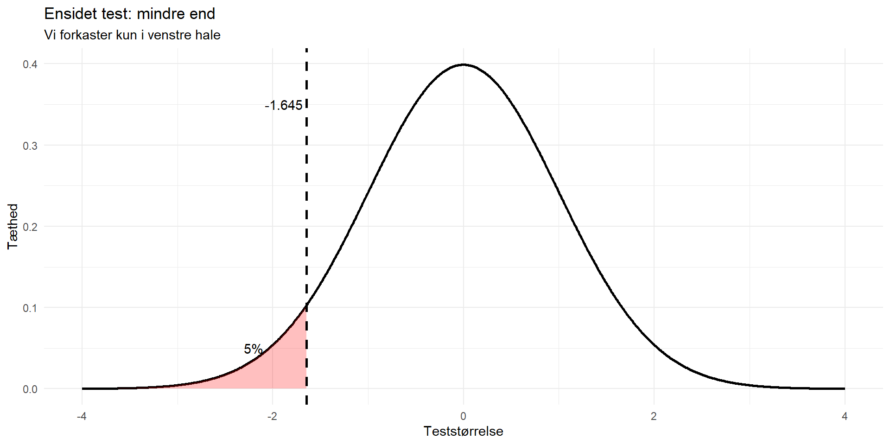
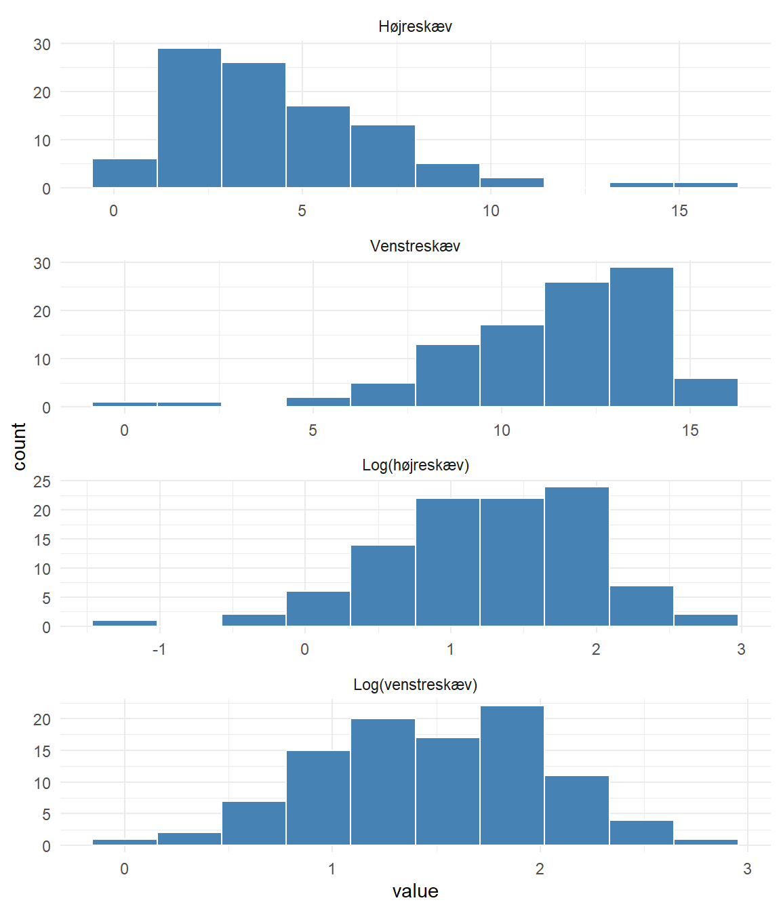

Standard Error of the Mean
Der er ofte typeopgaver til eksamen hvor I skal demonstrere at I forstår den
Og hvor I skal bruge qnorm og pnorm til at regne frem og tilbage.
Vi kunne rigtig godt tænke os at vide hvad det gennemsnitlige systoliske blodtryk for en gruppe patienter er.
Det er ikke realistisk at måle blodtryk på alle patienter i den gruppe.
I stedet kan vi tage en stikprøve, og måle blodtrykket på de patienter.
Men det fortæller os kun hvad gennemsnittet er i den stikprøve.
Ikke hvad den “sande” middelværdi for hele populationen er.
Vi har normalt “kun” en stikprøve, som vi har trukket fra populationen.
Vi kender ikke den “sande” middelværdi i populationen.
Eller den “sande” spredning/standardafvigelse
Men vi vil stadig rigtig gerne kunne sige noget om hvad den “sande” middelværdi er.
Tager vi tilstrækkeligt mange (tilpas store) stikprøver, vil disse stikprøvers middelværdier følge en fordeling.
Det vil være en normalfordeling
Den normalfordeling vil have en middelværdi der er lig med den “sande” middelværdi for populationen.
Vi er interesseret i gennemsnitshøjden af danske mænd. Vi ved ikke hvilken sandsynlighedsfordeling der beskriver danske mænds højde.
Så vi tager en stikprøve på eksempelvis 20 mænd fra populationen (alle danske mænd) og måler deres højde.
Vi beregner gennemsnittet af den stikprøve og gemmer det.
Det gentager vi mange gange. Ny stikprøve - mål - beregn gennemsnit. Ny stikprøve - mål - beregn gennemsnit.
Det gør vi mange gange.
Det giver en masse gennemsnit/middelværdier.
De middelværdier vil følge normalfordelingen.
Uanset hvilken sandsynlighedsfordeling danske mænds højde følger.
Det kan man føre bevis for. Men det springer vi over.
Hvis vi tager mange stikprøver, og beregner deres middelværdier. Så vil de middelværdier følge normalfordelingen.
Det gælder kun hvis stikprøven er tilpas stor. Ofte er 30 nok.
Hvis populationen selv er normalfordelt, er middelværdien normalfordelt uanset størrelsen af stikprøven.
Bemærk at vi ikke kender disse middelværdiers spredning. Eller hvad middelværdien af middelværdierne er. Det kommer vi til.
Vi har tidligere set hvordan vi beregnede et 95% normalområde for en værdi.
Det krævede at vi havde middelværdien, og standardafvigelsen.
Nu har vi mange middelværdier. Hvis vi havde “standardafvigelsen” for de middelværdier.
Så kunne vi beregne et interval, hvor 95% af middelværdierne fra stikprøverne var.
Det kalder vi et 95% konfidensinterval
Det område, hvor, hvis værdierne var normalfordelte, vi kan forvente at finde 95% af dem.
Middelværdierne af stikprøverne vil, når vi har nok af dem, være normalfordelte.
Så 95% af vores stikprøver vil have en middelværdi der ligger inden for det område.
Vi kan også formulere det som:
Vi har et estimat. Det er vores bedste bud. Men vi ved at det nok ikke er 100% korrekt. Det er næppe den “sande” værdi.
Men vi kan beregne et interval.
Intuitivt kan vi forstå det interval, som at vi er 95% sikre på indeholder den sande værdi.
Eller mere korrekt, at hvis vi beregner et interval ud fra tilstrækkeligt mange stikprøver, så vil den sande værdi være indeholdt i 95% af de intervaller.
Hvis vi kender spredningen på stikprøvens middelværdier.
Kan vi beregne et 95% KI for den middelværdi.
Det interval vil, i 95% af tilfældene, indeholde den sande middelværdi for populationen.

Da vi beregnede normalområdet skulle vi bruge en middelværdi og en standardafvigelse.
Standardafvigelsen fortæller hvordan de enkelte målinger i vores stikprøve afviger fra middelværdien af stikprøven.
Ikke hvordan middelværdierne fra mange stikprøver afviger.
Vi springer matematikken over, men spredningen af middelværdien af stikprøven kalder vi “Standard Error of the Mean”. SEM blandt venner.
Og den vi beregner vi ved
\[SEM = \frac{\sigma}{\sqrt{n}}\]
Vi har et estimat på “mean”. Der ikke 100% korrekt. Det har en fejl, “error”. Hvad er vores bedste bud på størrelsen af den fejl? SEM.
Vi fandt 95% normalområdet ved
\(\mu \pm 1.96\cdot\sigma\)
Vi finder så 95% konfidensintervallet ved
\(\hat{x} \pm 1.96\cdot\text{SEM}\)
Og SEM fandt vi ved:
\(\text{SEM} = \frac{s}{\sqrt{n}}\)
n er antallet af observationer. Og vi skriver \(s\) i stedet for \(\sigma\) fordi?
\(\sigma\) er den “sande” standardafvigelse i populationen. Vi har ikke målt på hele populationen. Så den kender vi ikke, og derfor bruger vi \(s\) i stedet.
Vi får oplyst “summariske regnestørrelser” for plasma magnesium for diabetikere. Vi får lov at antage at plasma magnesium er normalfordelt for de to populationer stikprøverne er trukket fra:
| gruppe | Antal | Gennemsnit | Spredning |
|---|---|---|---|
| Diabetikere | 227 | 0.719 | 0.068 |
| Ikke-diabetikere | 140 | 0.810 | 0.057 |
Beregn 95% konfidensinterval (KI) for hver af de to grupper.
Ja, det ligner noget vi har set før. Dengang skulle vi se på det interval der indeholdt 95% af observationer. Nu skal vi estimere to middelværdier.
Vi fandt et 95% KI for plasma-magnesium for diabetikere: [0.7101539, 0.7278461]. SEM var 0.004513319
Nu får vi en værdi for plasma-magnesium for ikke-diabetikere. Det giver os et estimat for plasma-magnesium for ikke-diabetikere på 0.810.
Er den så tæt på værdierne for diabetikerne, at vi ikke kan se forskel? Eller er den så langt væk at vi kan konkludere, at den nok er forskellig?
Vi kan intuitivt se at hvis 0.810 ikke er indeholdt i KI, og KI med 95% sikkerhed indeholder den sande værdi - så er 0.810 nok så langt væk fra den sande værdi, at der må være en forskel.
Eller at 0.81 ligger så langt væk fra 0.719, at sandsynligheden for at 0.81 er indeholdt i konfidensintervallet, er meget lille.
Man kan også se, at:
\(\frac{0.810-0.719}{SEM} = \frac{0.810-0.719}{0.004513319} = 20.16255\)
Det er det samme som:
\(0.81 = 0.719 + 20.16255\cdot SEM\)
Vi kalder 20.16255 for testværdien.
Den kritiske værdi ved 95% er 1.96. Er 20.16255 større? Ja, så ligger værdien længere væk end 1.96 standardfejl fra (estimatet for) middelværdien. Og så ligger den udenfor 95% konfidensintervallet.

Det var en hypotesetest.
Vi testede om 0.810 kunne være indeholdt i konfidensintervallet på [0.7101539, 0.7278461] og SEM = 0.004513319.
Det kan vi se at den ikke er. Afvigelsen er stor, men det kunne jo være et statistisk tilfælde.
Hvordan tester vi det mere generelt?
En antagelse om en parameter i populationen.
Vi opstiller en null-hypotese \(H_0\):
Eller mere generelt \(\theta = \theta_0\). \(\theta_0\) den konkrete værdi vi tester parameteren imod, eg. 0.81 eller 0.
I praksis “ingen forskel” eller “ingen effekt”.
Vi skriver \(\theta\) fordi theta starter med t, og det er vores testværdi. Det er mere generelt end \(\mu\), og tillader os at bruge samme notation uanset om det er middelværdier eller noget andet vi tester. Vi kalder \(H_0\) for “null”-hypotesen, fordi “null” er en prætentiøs måde at sige “ingenting”. Og vi tester om der ingen effekt er. Ofte kalder vi den så nul-hypotesen i stedet, fordi vi jo skriver 0 i \(H_0\).
Kaldet \(H_A\), enten at
Det er tosidet. Der \(\mu\) kan være større eller mindre, vi er ligeglade og kun interesseret i om der er en forskel.
Eller, ensidet:
Tosidet: Enhver forskel
Ensidet: En forskel i en bestemt retning
Vi har en null-hypotese, \(H_0: \theta = \theta_0\).
Hvor vi tester om \(\theta_0\) kunne være den “sande” værdi i populationen; givet vores data, som har givet os et estimat \(\hat{\theta}\) fra vores observationer.
Vi kigger lige nu på middelværdier og ville normalt skrive \(\mu\). Men bruger \(\theta\) fordi vi så kan generalisere.
Hvor langt ligger estimatet fra \(H_0\), målt i standardfejl?
Ligger den for langt væk, forkaster vi \(H_0\). Det betyder ikke (!) at \(H_A\) er sand eller bevist.
Hvis estimatet ligger “for langt” fra \(H_0\), forkaster vi \(H_0\) (og konkluderer at data understøtter \(H_A\)).
Når vi skal tage stilling til hvor langt for langt er, skal vi vælge hvor stor risiko vi vil løbe for at forkaste \(H_0\). Selvom \(H_0\) faktisk er sand.
Den risiko betegner vi \(\alpha\). Normalt sætter vi den til 5%, eller 0.05.
Vær vågne hvis opgaven taler om noget som helst andet!
To-sidet. Hvor vi er interesseret i enhver forskel:



Hvis vi vil finde enhver forskel, typisk at \(mu_1 - mu_2 = 0\), er vi ligeglade med om testværdien er “for lille” eller “for stor”. De 5% risiko vi accepterer kan derfor ligge på begge sider af kurven.
Har vi \(\alpha = 0.5\) skal den altså fordeles på begge sider og vi bruger:
Hvis vi er interesseret i om en værdi er mindre (\(H_A: \theta < \theta_0\)) - så må testværdien gerne være for stor. Den må blot ikke være for lille.
Vi har besluttet hvilken hypotese vi vil teste.
Vi har fundet den kritiske værdi - ud fra ønsket \(\alpha\) og retningen af testen.
Så mangler vi blot testværdien, som vi skal sammenligne med den kritiske værdi.
Der skal bruges to ting:
Hvad er afstanden fra vores estimat til \(H_0\), og
Hvad er standardfejlen
Den skal vi nemlig bruge beregne afstanden målt i standardfejl.
Vi havde den generelle \(H_0: \theta = \theta_0\)
Eller hvis vi taler om middelværdier: \(H_0: \mu = \mu_0\)
Vi havde også et estimat på hvad \(\mu\) kunne være. Det fik vi fra vores data. Vi bør kalde den for \(\hat{\mu}\).
Afstanden finder vi så ved at trække \(\mu_0\) fra \(\hat{\mu}\)
Så hvis vores estimat var 0.719 og vores null-hypotese var \(\mu = 0.81\)
Er afstanden: 0.719 - 0.81 = -0.091
Middelværdier ved vi godt hvordan vi beregner.
Men vi bliver normalt ikke bedt om det til eksamen - der får vi dem oplyst.
Hvis vi skal sammenligne to middelværdier er \(H_0\) typisk at forskellen på dem er 0.
Til eksamen får vi typisk enten oplyst to middelværdier, trækker så den ene fra den anden.
Eller også får vi oplyst hvad forskellen er på dem.
Vi skulle måle afstanden i enheder af standardfejlen.
Den afhænger af hvad vi tester - ikke af hypotesen!
For en enkelt middelværdi: SEM = \(\frac{\sigma}{\sqrt{n}}\)
Hvis vi sammenligner to middelværdier der ikke er parrede:
\(SE(\hat{\mu}_1 - \hat{\mu}_2) = \sqrt{\frac{s_1^2}{n_1} + \frac{s_2^2}{n_2}}\)
Og hvis data er parrede:
\(SE(\bar{d}) = \frac{s_d}{\sqrt{n}}\)
Ofte kender vi ikke den “sande” \(\sigma\) men har et estimat af standardafvigelserne fra data. Så bruger vi latinske bogstaver i stedet for græske. Matematikken er den samme.
Ikke-parrede data kommer fra to uafhængige grupper. Med forskellige individer i hver gruppe.
Her har vi to separate middelværdier. Og undersøger variation mellem personer.
Parrede data kommer fra to grupper der ikke er uafhængige. Så de afhænger!
Det kan være
Her undersøger vi variation indenfor “samme” person.
Vi fik oplyst “summariske regnestørrelser” for plasma magnesium for diabetikere og ikke diabetikere. Og måtte antage normalfordeling i de to populationer:
# A tibble: 2 × 4
gruppe Antal Gennemsnit Sprdening
<chr> <dbl> <dbl> <dbl>
1 Diabetikere 227 0.719 0.068
2 Ikke-diabetikere 140 0.81 0.057Vi beregnede 95% konfidensintervaller på hver af de to grupper, og konstaterede at middelværdien for diabetikere ikke er indeholdt i KI for ikke-diabetikere og omvendt, og at der derfor var signifikant forskel på niveauet.
Det var i hvert fald konklusionen i modelbesvarelsen.
Hvordan kunne vi ellers teste - når nu vi har lært den generelle metode for hypotesetestning?
Er den 0?
Eller:
\(H_0: \mu_{dia} - \mu_{ejdia} = 0\)
Er den alternative hypotese en- eller to-sidet?
Vi er ude efter enhver forskel, så to-sidet.
Signifikansniveau?
\(\alpha = 0.05\)
Det er et valg vi træffer.
Hvad er så den kritiske værdi?
1.96
Og hvor langt er vores estimat fra \(H_0\)?
\(H_0: \mu_{dia} - \mu_{ejdia} = 0\)
\(\mu_{dia} = 0.719, \mu_{ejdia} = 0.810\), så vores estimat er:
0.719-0.810 = -0.091
Og afstanden fra \(H_0\) er så: 0 - -0.091 = 0.091
Hvad er standardfejlen?
Hvor mange samples?
To. Er de parrede?
Nej.
Så skal vi bruge:
\(SE(\hat{\mu}_1 - \hat{\mu}_2) = \sqrt{\frac{s_1^2}{n_1} + \frac{s_2^2}{n_2}}\)
\(s_1 = 0.068\), \(n_1 = 227\)
\(s_2 = 0.057\), \(n_2 = 140\)
og derfor: \(SE_{diff} = \sqrt{\frac{0.068^2}{227} + \frac{0.057^2}{140}} = 0.00660\)
Hvor stor er forskellen så, målt i standardfejl?
0.091/0.00660 = 13.78788
Er den større end den kritiske værdi?
Ja.
Hvad betyder det?
At vores estimat ligger så langt fra \(H_0\), at vi kan forkaste \(H_0\), at forskellen på de to middelværdier er 0.
Og det kan vi med en sikkerhed på \(\alpha = 0.05\)
En gruppe patienter deles op i to, kontrol (318 patienter) og behandling (intervention, 323 patienter).
Der måles blodtryk før behandling (baseline), og efter 12 måneders behandling.
Forskellen i systolisk blodtryk mellem baseline og efter 12 måneder, oplyses som “diff”.
For kontrolgruppen får vi oplyst at forskellen er -16.6 mmHg og spredningen er 19.9
For interventionsgruppen er de tilsvarende tal -19.6 og 17.4
Vi skal nu finde ud af om der er et signifikant fald i blodtrykket for interventionsgruppen.
Det ser jo ud til at det falder. Forskellen er -19.6, men er det signifikant?
Kunne det tænkes at den sande middelværdi er 0?
Hvad er konfidensintervallet på forskellen?
For interventionsgruppen:
Fald: -19.6
Spredning: 17.4
Hvad er konfidensintervallet på forskellen?
Samme beregninger - nu
For kontrolgruppen:
Fald: -16.6
Spredning: 19.9
Vi får oplyst et konfidensinterval for fødselsvægte (g): [3561.5; 3583.4].
Beregnet baseret på 11279 kvinder.
Hvor meget bredere havde konfidensintervallet været, hvis vi kun havde haft data for 200 kvinder?
Hint: \(\text{SEM} = \frac{sd}{\sqrt{n}}\)
Vi undersøger effekten af et blodtrykssænkende præparat i sammenligning med placebo.
Vi får oplyst regnestørrelser for det systoliske blodtryk i mmHg for de to grupper:
# A tibble: 2 × 4
Gruppe n gennemsnit spredning
<chr> <dbl> <dbl> <dbl>
1 Behandling 82 152.5 18.4
2 Placebo 90 156.5 19.1Er der en signifikant forskel?
Hvad prøver vi at estimere?
Hvor mange grupper er der?
Forskel i middelværdier for to, ikke-parrede grupper.
To samples, uparret.
Så vi skal se om forskellen på de to middelværdier er signifikant forskellig fra 0.
\(H_0: \mu_1 - \mu_2 = 0\)
Samlet SE:
\(SE_{diff} = \sqrt{\frac{s_1}{n_1} + \frac{s_2}{n_2}}\)
# A tibble: 2 × 4
Gruppe n gennemsnit spredning
<chr> <dbl> <dbl> <dbl>
1 Behandling 82 152.5 18.4
2 Placebo 90 156.5 19.1Lidt kringlet eksamensspørgsmål
Hvis antallet af forsøgspersoner der skal have behandlingen kaldes \(n_1\) og antallet af personer i kontrollen (placebo) kaldes \(n_0\). og vi vil have at der er dobbelt så mange i kontrolgruppen som i forsøgsgruppen (\(n_0 = 2*n_1\)). hvor mange personer skal vi så have ialt, hvis det 95% konfidensinterval vi beregnede lige før får længden 8 i stedet. Givet at spredningerne er uændrede.
Puha.
Udtrykt ved \(n_0\) og \(n_1\), hvad er så svaret?
\(n_0 + n_1 = 3n_1\) fordi \(n_0 = 2n_1\)
Hvis et konfidensinterval er givet ved:
\(\text{estimat} \pm1.96\text{SE}\)
Hvad skal så være lig 8?
\(2\cdot1.96\text{SE} = 8\)
Hvordan beregner vi SE?
\(SE_{diff} = \sqrt{\frac{s_0}{n_0} + \frac{s_1}{n_1}}\)
Svar: \(n_1 = 125\) - fordi det er let at rode rundt i tallene.
Antag at fordelingen af hæmoglobin(koncentrationen) i en population er normalfordelt, med \(\mu\) = 13.3 g/100 ml. Spredning \(\sigma\) = 1.12 g/100 ml.
Vi udtager stikprøver af størrelsen n. For hver stikprøve beregnes stikprøvegennemsnittet. Disse stikprøvegennemsnit er normalfordelte med middelværdi \(\mu\) (hvis vi udtager uendeligt mange stikprøver)
Hvad er spredningen i fordelingen af stikprøvegennemsnittene?
Det er SEM. Den beregner vi ved \(\frac{\sigma}{\sqrt{n}}\)
Hvis vi sætter n til 15, hvilken andel af stikprøverne vil ligge mellem 13.0 og 13.6 g/100ml?
P(13.0 < X < 13.6)
P(X < 13.6) - P(X< 13.0)
Standardiser. \(\mu = 13.3\)
\(\sigma = 1.12\)
SEM = \(\frac{\sigma}{\sqrt{n}}\), \(\mu = 13.3\)
pnorm eller qnorm?
Hvor stor skal n være hvis 95% af stikprøverne skal have et snit der ligger mellem \(\mu-0.2\) og \(\mu+0.2\)
95% intervallet er:
\(\mu \pm 1.96\text{SEM}\)
Så \(1.96\text{SEM} = 0.2\)
\(1.96\frac{\sigma}{\sqrt{n}} = 0.2\)
Man har undersøgt 249 børn for hvor langt de kan hoppe. Der er følgende variable i datasættet:
idnr: løbenummer for personen
gender: Køn, 1 dreng, 2 pige
age: barnets alder
height: barnets højde i cm
cohR: Længde af hop på højre ben (cm)
cohL: Længde af hop på venstre ben (cm)
diff: forskel på cohR og cohL
Vi får også oplyst de første fire observationer:
# A tibble: 4 × 7
idnr gender age height cohR cohL diff
<dbl> <dbl> <dbl> <dbl> <dbl> <dbl> <dbl>
1 1 1 10 148.2 185.9 207.3 -21.4
2 2 2 9 136.2 257.4 223 34.4
3 3 1 9 139.4 203.5 250.3 -46.8
4 4 2 9 137.6 347 388.4 -41.4Og noget summarisk data:
>mean(cohR)
270.441
>mean(cohL)
265.3871
>mean(diff)
5.053815
>sd(cohR)
74.69524
>sd(cohL)
79.73807
>sd(diff)
37.87201
Er der overordnet forskel på hoppelængde på højre og venstre ben?
En elle to grupper?
Parret eller u-parret?
En gruppe - parret t-test. Det er differencen vi kigger på.
Så vi skal have fat i SEM.
mean(diff)
5.053815
sd(diff)
37.87201
Gennemsnit og spredning for diff for pigerne beregnes til hhv 12.51 og 36.15
Når Berit hopper 250 cm på højre ben, men kun 200 cm på venstre ben er der så grund til at tro at der er noget galt med hendes venstre ben?
Eller - falder den diff vi ser for Berit uden for hvad vi forventer? Altså uden for 95% normalområdet?
Hvad er normalområdet?
Vi får oplyst data for 18 tilfældigt valgte insulin-afhængige diabetikere.
[1] 107 119 99 114 120 104 88 114 124 116 101 121 152 100 125 114 95 117Data er procent af idealvægt. 95 betyder at pågældende individ vejer 5% mindre end idealvægten. 120 betyder at vedkommende vejer 20% mere end idealvægten.
Vi får oplyst at et 90% reference interval kan beregnes til [89.1; 136.5]
Beregn et 95% konfidensinterval for den sande middelprocent af idealvægt.
90% KI: [89.1; 136.5]
Hvordan beregnes et 95% KI?
\(\mu \pm1.96\sigma\)
De 1.96 var fordi?
Så hvilken værdi er der blevet brug ved et 90% KI?
Kan vi så finde \(\sigma\) fra 90% KI’et?
Hvad var SEM?
\(SEM = \frac{\sigma}{\sqrt{n}}\)
Har I fået fingre i modelbesvarelsen - så er der regnefejl… Det er ikke det eneste problem med den løsning…
Indeholder det konfidensinterval vi har beregnet 100%?
Hvad fortæller svaret på det spørgsmål?
Angiv relevant nullhypotese,
samt eventuelt relevant estimat.
Hvad er null-hypotesen?
\(H_0: \mu = 100\)
Hvor \(\mu\) er hvad?
Den sande middelprocent af idealvægt for populationen af insulin-afhængige diabetikere.
Var 100 indeholdt i 95% KI?
Nej.
Hvad gør vi så med \(H_0\)?
Forkaster den.
Det relevante estimat er den estimerede værdi for \(\mu\). Angiv det 95% KI vi beregnede lige før.

Disse histogrammer er konstrueret til lejligheden, og har ikke meget med det efterfølgende at gøre.
Men. Hvad kan vi sige om dem?
Vi skal kunne genkende en højre-skæv fordeling.
Og en venstre-skæv fordeling
I den højre-skæve har vi observationer der ligger og roder rundt ude til højre, relativt til flertallet af observationer.
Vi skal også kunne se at i hvert fald den nederste er tilnærmelsesvis normalfordelt.
Hvis vi får oplyst, at plottet “Log(højreskæv)” er de samme data som vi ser i plottet “Højreskæv”, blot log-transformeret, skal vi også kunne erkende, at de log-transformerede data er mere normalfordelte end de ikke-log-transformerede data.
Det gælder generelt, at logaritmen af data er mere normalfordelt end data.
Vi skal se på data fra en undersøgelse af D-vitaminniveuaet for danske og polske piger.
Vi får følgende log-transformerede data oplyst:
| Land | Gennemsnit | Spredning | n |
|---|---|---|---|
| DK | 3.211 | 0.492 | 59 |
| PO | 3.389 | 0.418 | 61 |
Beregn variationen på gennemsnittene (SEM) for det log-transformerede D-vitaminniveau for hhv de danske og polske piger.
Hvordan var det nu vi beregnede SEM?
\(\text{SEM} = \frac{sd}{\sqrt{n}}\)
Beregn 95% KI for de danske og polske piger separat. Hvordan fortolker vi resultaterne? Kan vi konkludere noget om forskellen i D-viatminniveau mellem de danske og polske piger? Er den signifikant?
| Land | Gennemsnit | Spredning | n |
|---|---|---|---|
| DK | 3.211 | 0.492 | 59 |
| PO | 3.389 | 0.418 | 61 |
Givet
\(\text{SEM} = \frac{sd}{\sqrt{n}}\)
Hvordan beregner vi så et 95% KI?
\(\text{Gennemsnit} \pm1.96\cdot\text{SEM}\)
Hvad er det nu et 95% KI fortæller os?
Det fortæller os, at hvis vi beregner KI for et større antal stikprøver, så vil 95% af disse indeholde den sande værdi for gennemsnittet af den log-transformerede D-vitaminkoncentration.
For hver af de to grupper.
Ofte skriver vi nu at hvert KI indeholder det sande middelværdi for (osv) med 95% sandsynlighed.
Men det er faktisk ikke helt korrekt.
Vi så at der var overlap mellem intervallerne.
Det betyder ikke at vi kan sige noget om en signifikant forskel eller ej.
Havde de to gennemsnit ligget i det andet KI, ville det være en anden sag.
Men stadig lidt usikkert.
Så vi kan ikke konkludere om der er signifikant forskel på de to populationers D-vitaminniveau.
Udregn teststørrelsen for den approksimative t-test for sammenligning af log(D-vitaminniveua). Brug de beregnede variationer på gennemsnittene. Brug teststørrelsen til at konkludere om forskellen på D-vitaminniveauet er statistisk signifikant på et 5% niveau.
Her bliver I virkelig hjulpet…
| Land | Gennemsnit | Spredning | n |
|---|---|---|---|
| DK | 3.211 | 0.492 | 59 |
| PO | 3.389 | 0.418 | 61 |
Hvad er det så vi tester?
\(H_0: \mu_{dk} - \mu_{po} = 0\)
Givet \(\text{SEM} = \frac{sd}{\sqrt{n}}\)
Hvad er så SE for forskellen på middelværdierne?
\(SE(\bar{x}_1 - \bar{x}_2)=\sqrt{SEM_1^2 + SEM_2^2}\)
Vi får nu at vide at vi kan beskrive log(D-vitaminniveau) i begge lande ved en normalfordeling. Beregn et 95% reference interval for log(D-vit) for danske piger.
Hvordan beregner vi referenceintervallet?
\(\mu \pm1.96\sigma\)
Skal vi bruge SEM?
Nej, for nu antager vi at tallene er normalfordelte.
| Land | Gennemsnit | Spredning | n |
|---|---|---|---|
| DK | 3.211 | 0.492 | 59 |
| PO | 3.389 | 0.418 | 61 |
Brug derefter \(\mu\) og \(\sigma\) for de polske piger til at beregne hvor stor en andel af dem der forventes at ligge inden for det danske referenceinterval.
Hvis referenceintervallet for de danske piger er [nedre, øvre], hvordan finder vi andelen af polske piger der ligger inden for det?
Det er: P(nedre < X < øvre)
Hvad er det lig med? P(X < øvre) - P(X < nedre)
Hvordan får vi beregnet det? Vi normaliserer udtrykkene
Med hvad? \(\mu\) og \(\sigma\) for de polske piger
Og så skal vi bruge? pnorm
Fordi vi søger en andel/sandsynlighed.
KI for DK piger var [2.24668, 4.17532]
| Land | Gennemsnit | Spredning |
|---|---|---|
| PO | 3.389 | 0.418 |